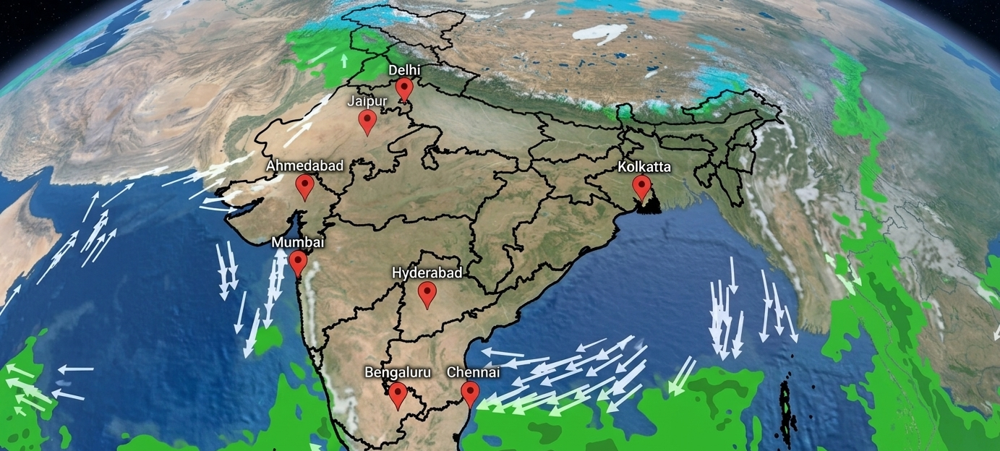
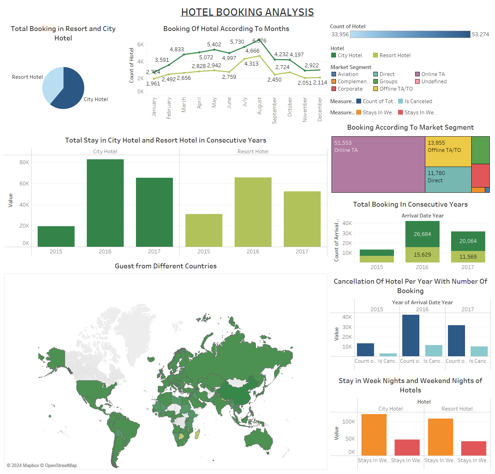
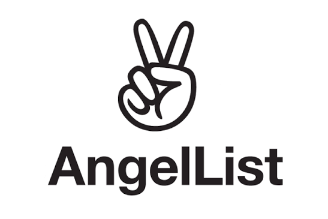
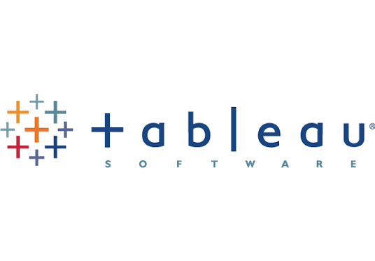

Projects
Customer Churn Prediction
Predicts which telecom customers are likely to leave, using Logistic Regression and Random Forest. Logistic Regression caught more of the real churners (recall 0.797), while Random Forest was more balanced (F1 0.629). SHAP showed that month-to-month contracts and short tenure push churn risk up the most, and the model runs live as a Streamlit app.
Zomato Restaurant Clustering & Sentiment
Grouped 100 Hyderabad restaurants into budget, mid-range and premium tiers with KMeans. The silhouette score was only 0.225, so the app says openly that the tiers overlap. I also trained a review sentiment model (95% accuracy against a 72% baseline) and built a Streamlit app with a similar-restaurant finder.
Health Insurance Cross-Sell Prediction
Ranks health insurance customers by how likely they are to buy a vehicle policy, so a sales team can call the best prospects first. The tuned LightGBM reached 0.858 ROC-AUC, and the top 30% of ranked customers held 79% of the buyers. I also caught a data leak where over-sampling before the split pushed recall to 0.995 (0.30 once fixed).

Automated Cloud Weather ETL & Executive Climate Risk Analytics
Built a local-first ETL pipeline that pulls rolling 30-day weather data for 8 Indian metros from the OpenWeatherMap API and Azure SQL Database into a SQLite store (with an Azure Blob raw-data backup), feeding a Power BI dashboard that flags heat, rain, and wind risk day by day.
Olist E-Commerce
Deep-dive EDA on ~100k Brazilian e-commerce orders. Found that delivery delays hurt review scores more than price does, mapped seller/customer concentration in São Paulo, and traced how freight costs disproportionately burden remote-state buyers.
Redfin Housing Web Scraping
Scraped Tampa, FL real-estate listings straight off Redfin using curl_cffi to get past basic anti-bot defenses, then cleaned and explored how price scales with square footage — a far stronger price driver here than bedroom count.
Amazon Product Dissection and ER Diagram
Reverse-engineered Amazon's core transactional model into an 8-entity relational schema (customers, sellers, products, orders, payments, delivery, reviews) with a full ER diagram and a real-world case study on the problems each feature solves.

Hotel Booking Insights Visualization
Built an interactive Tableau dashboard on hotel booking data — cancellation risk by lead time, seasonal demand swings, guest segmentation, and length-of-stay patterns — aimed at helping revenue managers protect RevPAR.

Hotel Booking Analysis
Cleaned and explored 119k+ hotel booking records in pandas — deduplicated ~32K duplicate rows, imputed missing agent/company/children fields, and profiled what actually drives cancellations and seasonal rate changes.
Titanic Survival Analysis
Cleaned and feature-engineered the Titanic dataset, then used a Chi-Square test to confirm gender's effect on survival (p < 0.05) and a t-test to confirm the age gap between survivors and non-survivors (p = 0.0031). Built a Power BI dashboard on top of the findings.

Job Portal Web Scraping
A BeautifulSoup scraper that collects data science job listings and counts which skills show up most, alongside the salary ranges listed.

Superstore Analytics Report
Answered 30 scenario-based business questions using the Superstore dataset — sales by category and region, profit by segment and shipping mode, order processing time, and discount-vs-profit trade-offs — each backed by a chart and a rationale for the chart choice.